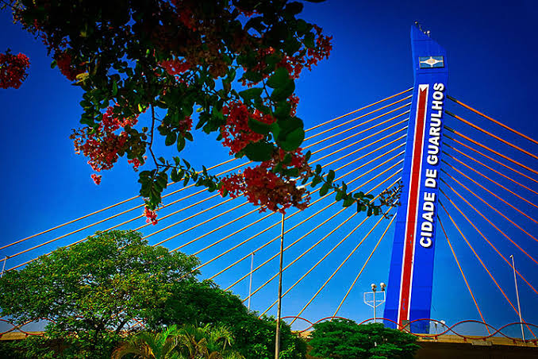
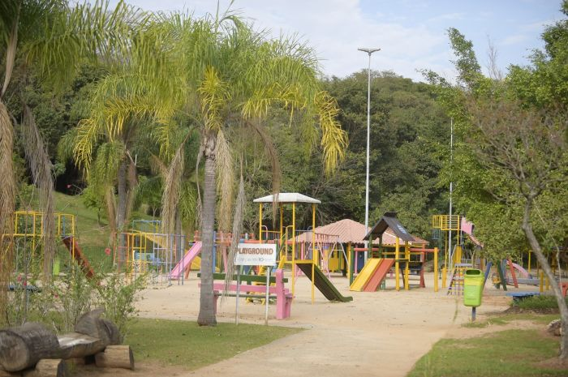
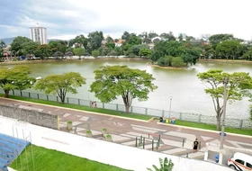
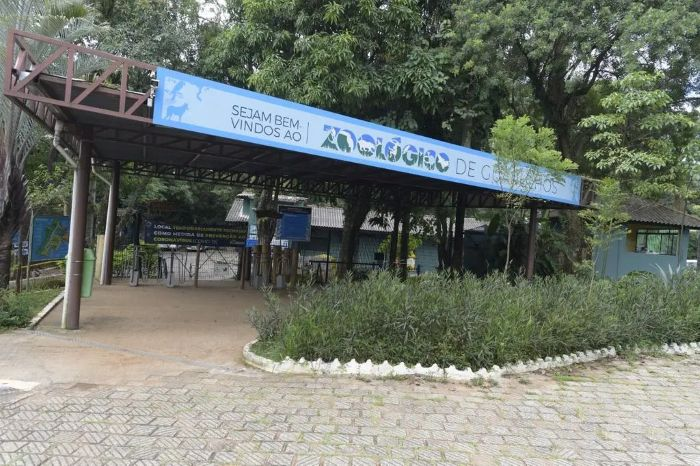
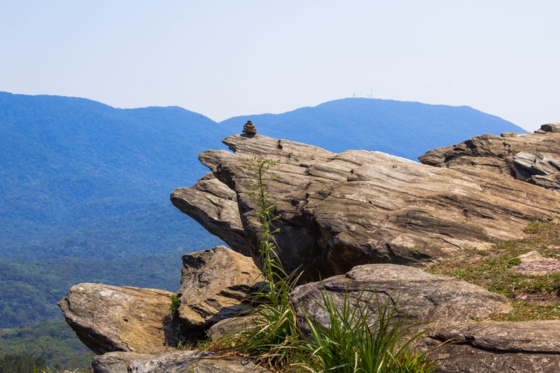

Esse é o maior aeroporto da América Latina, o melhor lugar pra viajar e ir para qualquer lugar seja dentro ou fora do país,o aeroporto também é repleto de lojas e lanchonetes caso você precise de um lanchinho

Esse é o maior aeroporto da América Latina, o melhor lugar pra viajar e ir para qualquer lugar seja dentro ou fora do país,o aeroporto também é repleto de lojas e lanchonetes caso você precise de um lanchinho

Esse é um dos melhores lugares da cidade quando o assunto é lazer, o bosque maia é repleto de quadras, playgrounds, vegetações e lagos. Sem dúvida um dos melhores lugares para levar a família.

Esse é um parque que ,como o nome diz, tem como principal atração um lago cheio de patos doidos para receberem pedaços de pão.Além de alimentar os patinhos você pode também passear andar de pedalinho no lago

O zoológico de Guarulhos está repleto de bichos de todo tipo se você quer dar uma olhada nos animais pode confiar que é o melhor lugar possível pra ir.

O morro do Nhangussu oferece uma vista incrível da Serra de Itaberaba, da Serra da Cantareira e de trechos de Guarulhos e regiões vizinhas.